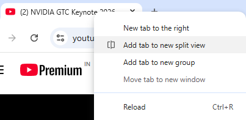
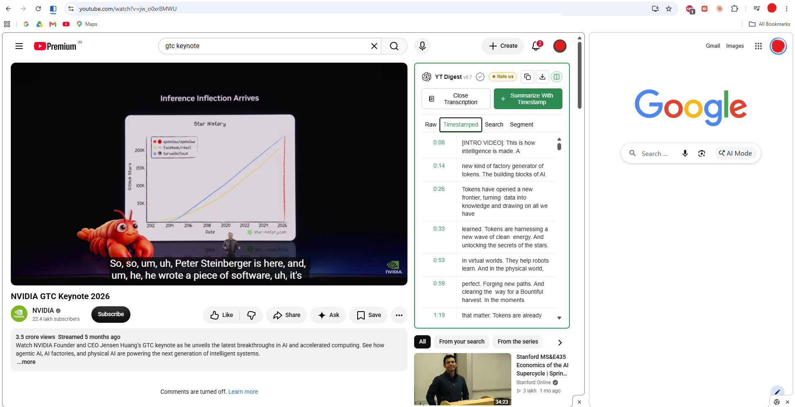
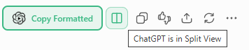
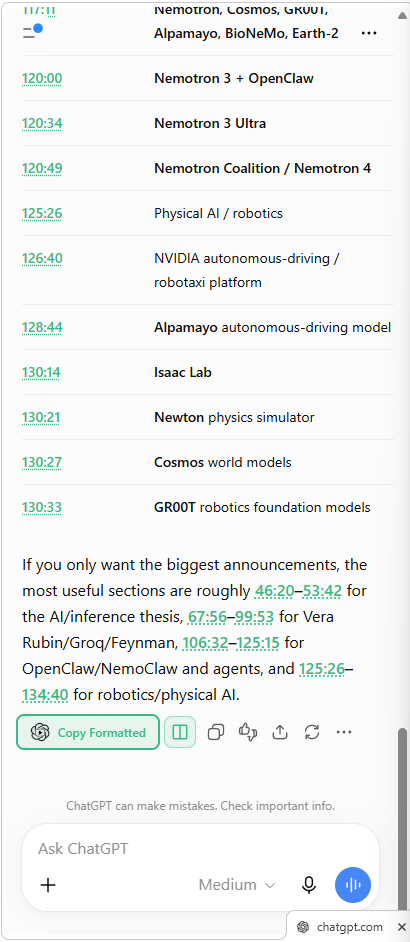

For the lecture you’re trying to follow.
Read along, search for a term, and revisit the explanation without another round of scrubbing. Take the transcript to ChatGPT when you want to ask a question.
GET TO THE POINT WITHOUT WATCHING EVERY MINUTE.
Read the transcript. Ask better questions. Find the moment that matters.
Now keep YouTube and ChatGPT side by side with Chrome Split View.

Lectures · Podcasts · Tutorials · Interviews
NEW INTRODUCING SPLIT VIEW
YouTube on one side. ChatGPT on the other. Click a timestamp in an answer and jump straight to the moment in your video.
See Split View in action Four simple steps. A whole new way to explore.WHAT IS YT DIGEST?
YT Digest is a free Chrome extension that puts the YouTube transcript beside the video and takes it into your own ChatGPT conversation. Find the quote, unpack the explanation, or work with just the part you need.
Read along, search for a term, and revisit the explanation without another round of scrubbing. Take the transcript to ChatGPT when you want to ask a question.
Find the passage that interests you. Select that segment and let ChatGPT focus on it, without the rest of the episode filling the conversation.
Here’s what you can do with it.


01 / YOUTUBE TRANSCRIPTS
Missed a definition while taking notes? Click View Transcription and read the video’s available subtitles beside it. Keep the explanation in front of you instead of replaying the same sentence.

02 / CHATGPT SUMMARIES
Click Summarize to bring the transcript into ChatGPT with an editable prompt. Ask for the argument in plain English, a breakdown of a difficult concept, or the takeaways you want in your notes. Then send it when you’re ready.


03 / SEARCH & TIMESTAMPS
You remember the phrase, not when it was said. Type it into Search, scan the matches, and click a timestamp to hear it in context. No hunting through a two-hour timeline.
04 / COPY & DOWNLOAD
Copy the loaded transcript into your notes, or download it to keep a reference. Spend your time choosing what matters—not typing out what the speaker already said.

05 / SUMMARIZE A SEGMENT
Want to unpack one explanation rather than the whole video? Open Segment, choose the start and end points, and click Summarize Segment. YT Digest takes only that excerpt into ChatGPT, keeping the context smaller and the conversation focused.
FROM VIDEO TO INSIGHT
Install the extension from the Chrome Web Store.
Open a video, click View Transcript in the YTDigest panel, and let the transcript load.
Read the transcript, search for key ideas, or jump to any timestamp. Click Summarize to send the transcript to ChatGPT, then edit the prompt to summarize, ask questions, or focus on a selected segment.
NEW IN V0.7 / CHROME SPLIT VIEW
Keep the video and the conversation together. Go from a long transcript to the part you actually want to watch.
STEP 01 / OPEN SPLIT VIEW
Open your YouTube video, right-click its browser tab, and choose Add tab to new split view. Chrome opens the side-by-side workspace. You don’t need to open ChatGPT yourself.

STEP 02 / CHOOSE YOUR SUMMARY
Load the transcript in YT Digest, then click Summarize or Summarize With Timestamp. YT Digest automatically opens ChatGPT in the partner pane instead of adding another tab.
Recommended: Summarize With Timestamp. Keep the time references in the transcript so ChatGPT can point you back to useful moments.

STEP 03 / MAKE THE PROMPT YOURS
YT Digest inserts the transcript and a suggested prompt into ChatGPT. Complete or edit the prompt, then send it to get your summary. Try asking for key takeaways with timestamps, or the moments that explain a particular topic.
“Summarize the key ideas and include timestamps so I can revisit each moment.”
STEP 04 / JUMP BACK TO THE VIDEO
While Split View is active, YT Digest automatically detects timestamps in the latest ChatGPT answer and turns them into links. Click a timestamp to jump to that moment in the paired YouTube video—without leaving the conversation.


Leave Split View whenever you like. Both indicators update automatically, and the regular YT Digest workflow remains available.
GOOD QUESTIONS
YTDigest is a Chrome extension that extracts available YouTube transcripts, makes them searchable, and sends transcript text to ChatGPT for summaries and questions. It also lets you navigate videos by timestamp and work with selected segments.
Yes. YTDigest is free to use and does not require an API key.
YTDigest currently works with videos that have available subtitles.
Yes. Once the transcript is in ChatGPT, you can ask follow-up questions, request an explanation, or explore a topic in more detail. Check important answers against the original video.
Right-click your YouTube tab and choose Add tab to new split view. Load the transcript and click Summarize or, preferably, Summarize With Timestamp. YTDigest opens ChatGPT in the partner pane and prepares an editable prompt. Send your prompt, then click timestamps in the latest answer to seek the paired video. Chrome creates the split; YTDigest detects and uses it. On Chrome versions without compatible Split View support, the regular workflow remains available.
No API key is needed. You use the ChatGPT website with its own account requirements and usage limits. YTDigest prepares an editable prompt; it does not submit it automatically.
Read our privacy policy. Anonymous product analytics is optional and off by default, with a toggle in the extension popup.
Free to use · No API keys · Made for Chrome